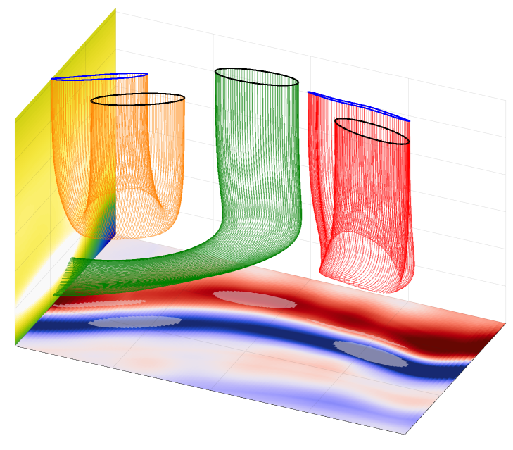
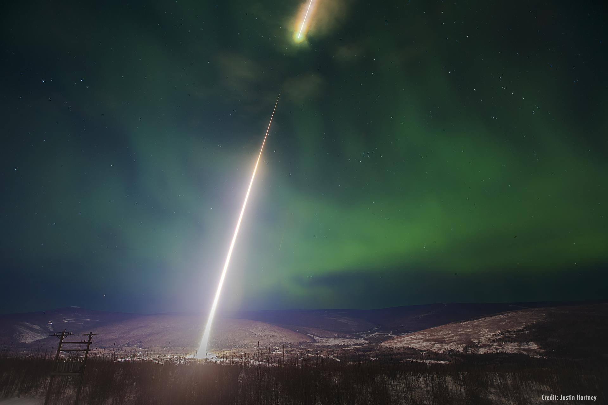
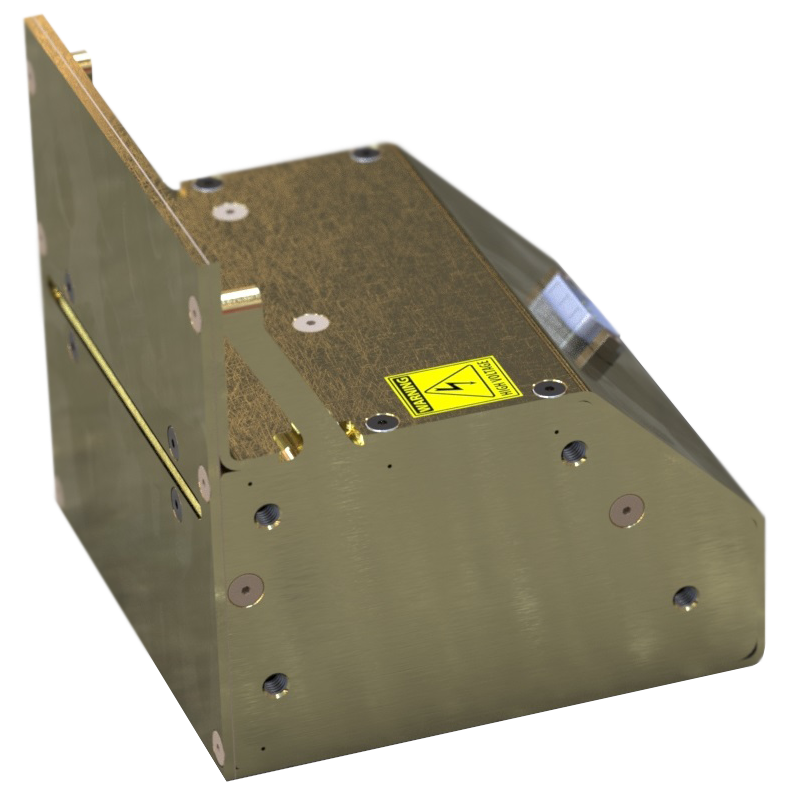

Jules van Irsel
I'd like to welcome you to my online portfolio and share some of my personal and professional endeavors; my name
is Jules van Irsel and I am a space plasma physicist, rocket instrument scientist, and former mechanical design
engineer. I am currently working on my Ph.D.
dissertation covering electric current connectivity
in the atmosphere surrounding aurorae, working extensively with 3D plasma fluid simulations.
Some skills I possess include mechanical and electrical computer-aided design, engineering,
manufacturing, and testing, as well as laboratory plasma testing for rocket instruments that measure ion flow.
I am also proficient in the core branches of physics, multilingual computational physics, and large-scale data
management.
I built this website from scratch to showcase and expand upon my curriculum vitae, highlighting my
accomplishments and experiences in greater detail. Additionally, this project allowed me to learn and apply
HTML, CSS, and JavaScript, turning the process into an exciting and rewarding learning experience.
Thank you for your time and interest in my work!
Multi-Fluid Plasma Modeling
Throughout my Ph.D. program, I have worked extensively with state-of-the-art 3D ionospheric simulations provided
by the Geospace Environment Model of Ion-Neutral Interactions
(GEMINI), utilizing the NASA Advanced Supercomputing
(NAS) Division at Ames Research Center.
Originally developed by
Matt Zettergren,
Joshua Semeter, and
Jonathan Snively,
GEMINI continues to evolve. At its core, GEMINI is a multi-fluid, quasi-electrostatic model that tracks key
state parameters—such as pressure and temperature—of electrons and six different ion species as they respond to
electromagnetic, gravitational, and fluid forces. You can learn more about my
contributions to this evolving model!
A significant portion of this research, spanning the past two years of my Ph.D., has been funded by NASA's
Future Investigators in NASA Earth and Space Science and Technology
(FINESST) 2022 solicitation. Feel free to read my
proposal and learn more!

NASA MIDEX Proposal
During the first two years of my Ph.D. program, I contributed to both the
Science
and Science
Implementation sections of the Phase A Concept Study Report for the 2019 Heliophysics Medium-Class Explorer
(MIDEX) proposal for the Auroral Reconstruction CubeSwarm
(ARCS) mission.
Through an array of 32 CubeSats (shown here in red) and 32 ground-based, all-sky observatories spanning
most of Alaska (shown in green), this proposed mission aims to uncover the physics behind temporal and spatial
gradients pertaining to auroral ionospheric plasma. These gradients are impossible to untangle with
one-dimensional data tracks provided from a single, or even a few, spacecraft.
My contributions include providing a
catalog of Observing System
Simulation Experiments (OSSE) using GEMINI to verify measurement tolerances and proper redundancies,
as well as developing plasma flow inversion techniques and visualizations that supported orbit selection and
other mission decisions.
Learn more about my work on other proposals, including NASA's 2022 Heliophysics Low Cost Access to Space
GNEISS
sounding rocket proposal or my
FINESST
proposal for graduate funding.

Sounding Rockets
Beyond my Ph.D. research, I conduct testing and fieldwork to support various
sounding rocket instruments. Two such instruments
I work with are the rocket Miniature Plasma Imager
(rMPI)
developed by
Johnathan Burchill
et al., and the Petite Ion Probes
(PIP)
developed by
Kristina Lynch
et al.
Both these instruments are designed to measure characteristics of space plasma by analyzing ion velocity
distributions. The rMPI takes 2D snapshots of these distributions using its wide-angle
aperture, while the PIPs leverage their compact size, low power consumption, and affordability to capture
complete ion distributions through multiple-unit deployment.
My work with these instruments includes electronics, hardware, vibration, ultra-high vacuum,
plasma, and general system testing, as well as integration of these instrument systems into various sounding
rocket payloads. Altogether, I have spent several months conducting fieldwork at three launch sites: NASA's
Wallops Flight Facility (WFF) in Virginia, the Poker Flat
Research Range (PFRR) in
Alaska, and the Svalbard Rocket Range
(SvalRak) in Ny-Ålesund.
One of my most incredible journeys so far was to the remote research town of Ny-Ålesund
situated at a latitude of nearly 79° North on a Norwegian archipelago called Svalbard. Have a look at some
photos I took along the way!
This image captures the launch of the Loss through Auroral Microburst Pulsations
(LAMP)
sounding rocket at 2:27 AM AKST on March 5, 2022. I integrated a total of 8 PIPs onto this rocket! Image credit:
Justin Hartney.

Computer Aided Design
Prior to starting graduate school, I worked as an instrument design and assembly assistant at the University of
Calgary in Alberta. I took on the redesign of the rocket Miniature Plasma Imager
(rMPI),
originally developed by
Johnathan Burchill.
The rMPI analyzes space plasma characteristics by measuring 2D ion velocity distributions. It does
this by sequentially increasing the voltage of a hemispherical anode which brakes the ions and guides them
onto a 1D electron charge-coupled device (CCD), effectively scanning the different energies of the ions. Herein
lies the main innovation of this instrument allowing it to be smaller, more affordable, and use less power
compared to similar designs.
Shown here is the result of my redesign of the rMPI. This new rMPI is significantly smaller, uses less power
still, has improved circuit board design, and the design surrounding the hemispherical anode has significant
upgrades. On top of that, it includes baffling in the aperture, which improves the angular resolution of the
instrument, and overall has significantly improved manufacturability. Unfortunately, due to confidentiality
agreements, I am unable to share specific details or designs.
Several of these redesigned rMPIs have successfully flown on NASA sounding rockets including the Cusp Region
EXperiment
(C-REX)
2 and the Ion-Neutral Coupling during Active Aurora
(INCAA)
missions.
